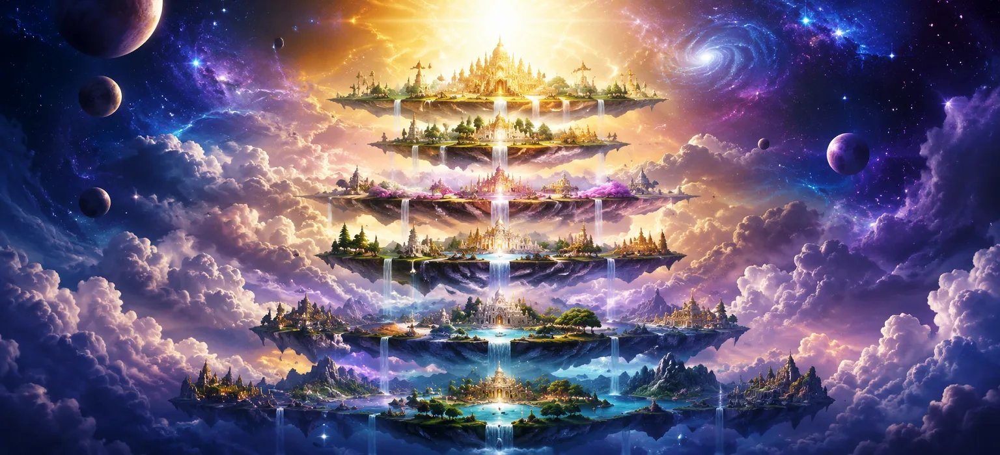

After glorifying Lord Shiva as the Eternal Creator, the sages desired to understand how the vast universe was organized after creation began. They had learned that countless worlds emerged through the divine will of Mahadeva, but they wished to know the nature of the sacred realms where gods, sages, and highly evolved beings reside. With great curiosity and reverence, they asked about the higher regions of existence that exist beyond the earthly plane. In response, the sacred narration reveals the Seven Higher Worlds, known as the Sapta Lokas. These celestial realms form a magnificent hierarchy within creation, each possessing its own purpose, inhabitants, spiritual atmosphere, and degree of divine proximity. Together, they demonstrate the extraordinary order and wisdom through which Lord Shiva governs the cosmos. भगवान शिव को सनातन सृष्टिकर्ता के रूप में महिमामंडित करने के बाद, ऋषियों ने जानना चाहा कि सृष्टि के आरम्भ होने के पश्चात विशाल ब्रह्माण्ड किस प्रकार व्यवस्थित हुआ। उन्होंने जाना था कि महादेव की दिव्य इच्छा से असंख्य लोक प्रकट हुए, किंतु वे उन पवित्र लोकों का स्वरूप जानना चाहते थे जहाँ देवता, ऋषि और अत्यंत विकसित चेतना वाले प्राणी निवास करते हैं। बड़ी जिज्ञासा और श्रद्धा से उन्होंने पृथ्वी लोक से परे स्थित उन उच्च प्रदेशों के विषय में पूछा। उत्तर में पवित्र वर्णन से ज्ञात होता है कि सृष्टि में सात उच्च लोक हैं, जो चेतना, ज्ञान और आध्यात्मिक उत्कर्ष के क्रमिक स्तरों को दर्शाते हैं।
The Shiva Purana explains that existence is far greater than the physical world perceived by human senses. Beyond the earthly realm lie higher planes filled with extraordinary light, knowledge, purity, and spiritual power. Souls ascend to these worlds according to their Karma, devotion, wisdom, and divine merit accumulated through countless lives. These sacred realms are not merely places of enjoyment; they are stages in the soul’s spiritual journey toward greater realization. From the realm of sages to the highest abode of truth, each world reveals a deeper aspect of the divine order established by Lord Shiva. Understanding the Seven Higher Worlds helps devotees appreciate the vastness of creation and the limitless possibilities of spiritual evolution. शिव पुराण बताता है कि मानव इन्द्रियों से दिखाई देने वाला भौतिक संसार ही सम्पूर्ण अस्तित्व नहीं है। पृथ्वी लोक के परे ऐसे उच्च स्तर स्थित हैं जो असाधारण प्रकाश, ज्ञान, पवित्रता और आध्यात्मिक शक्ति से परिपूर्ण हैं। असंख्य जन्मों में संचित कर्म, भक्ति, ज्ञान और पुण्य के अनुसार आत्माएँ इन लोकों की ओर आरोहण करती हैं। ये पवित्र लोक केवल सुख भोगने के स्थान नहीं हैं; वे आत्मा की आध्यात्मिक यात्रा के ऐसे चरण हैं जहाँ वह क्रमशः उच्चतर अनुभूति की ओर बढ़ती है। पृथ्वी से आरम्भ होकर चेतना ऊपर के लोकों में विकसित होती जाती है और अन्ततः परम सत्य की ओर उन्मुख होती है।
The first of the Seven Higher Worlds is Bhuloka, the earthly realm where human beings, animals, plants, and countless forms of life exist. Although it appears ordinary when compared to the celestial worlds above, Bhuloka holds a unique position within creation because it is the realm of Karma. Here, souls are given the opportunity to make choices, perform righteous actions, acquire wisdom, and progress spiritually. The Shiva Purana explains that even the gods value human birth because life on Earth offers the rare chance to attain liberation. Through devotion to Lord Shiva, self-discipline, and righteous conduct, a soul can rise beyond the limitations of worldly existence and ascend toward higher realms. सात उच्च लोकों में प्रथम भूलोक है, अर्थात पृथ्वी का वह लोक जहाँ मनुष्य, पशु, वनस्पति और असंख्य प्रकार के जीव निवास करते हैं। ऊपर स्थित दिव्य लोकों की तुलना में यह सामान्य दिखाई देता है, फिर भी सृष्टि में इसका विशेष स्थान है क्योंकि यही कर्म का क्षेत्र है। यहाँ आत्माओं को चुनाव करने, धर्मपूर्ण कर्म करने, ज्ञान प्राप्त करने और आध्यात्मिक रूप से आगे बढ़ने का अवसर मिलता है। शिव पुराण बताता है कि देवता भी मानव जन्म को महत्त्व देते हैं, क्योंकि पृथ्वी पर जीवन आत्मा को कर्म करने, अपने संस्कारों को शुद्ध करने और मुक्ति की दिशा में आगे बढ़ने का दुर्लभ अवसर प्रदान करता है।
Above Bhuloka lies Bhuvarloka, a subtle region that exists between the earthly world and the heavenly realms. This world is inhabited by celestial beings, Siddhas, Gandharvas, Yakshas, and other divine entities who possess extraordinary powers and spiritual accomplishments. Bhuvarloka serves as a bridge between material existence and higher spiritual planes. It reminds devotees that creation contains many unseen dimensions beyond ordinary perception, all operating under the divine order established by Lord Shiva. भूलोक के ऊपर भुवर्लोक स्थित है, जो पृथ्वी के संसार और स्वर्गीय लोकों के बीच का सूक्ष्म प्रदेश है। यहाँ दिव्य प्राणी, सिद्ध, गन्धर्व, यक्ष और अन्य ऐसे आध्यात्मिक सामर्थ्य से युक्त प्राणी निवास करते हैं जिन्होंने असाधारण शक्तियाँ और सिद्धियाँ प्राप्त की हैं। भुवर्लोक भौतिक अस्तित्व और उच्च आध्यात्मिक लोकों के बीच एक सेतु का कार्य करता है। यह भक्तों को स्मरण कराता है कि सृष्टि में सामान्य दृष्टि से परे अनेक अदृश्य आयाम हैं और वे सभी भगवान की दिव्य व्यवस्था के अधीन संचालित होते हैं।
Svarloka, often called Heaven or Svarga, is the celebrated realm of the gods. Lord Indra rules this magnificent world, which is filled with celestial palaces, divine music, sacred gardens, and extraordinary beauty. Souls who accumulate great merit through righteous actions may experience the rewards of their virtue in this heavenly realm. Yet the Shiva Purana teaches that even Svarga is not eternal. When the results of accumulated merit are exhausted, souls must eventually continue their journey. Therefore, wise seekers aim not merely for heavenly pleasures but for lasting union with the Supreme Lord. स्वर्लोक, जिसे स्वर्ग या स्वर्गलोक भी कहा जाता है, देवताओं का प्रसिद्ध लोक है। भगवान इन्द्र इस अद्भुत लोक के अधिपति हैं, जो दिव्य महलों, मधुर संगीत, पवित्र उद्यानों और अनुपम सौन्दर्य से परिपूर्ण है। जो आत्माएँ धर्मपूर्ण कर्मों से महान पुण्य अर्जित करती हैं, वे इस स्वर्गीय लोक में अपने पुण्य के फलों का अनुभव कर सकती हैं। फिर भी शिव पुराण सिखाता है कि स्वर्ग भी शाश्वत नहीं है। जब संचित पुण्य के फल समाप्त हो जाते हैं, तब आत्माओं को अपनी यात्रा आगे जारी रखनी पड़ती है। इसलिए स्वर्गीय सुख भी अंतिम लक्ष्य नहीं है; परम लक्ष्य भगवान शिव के सनातन सत्य की अनुभूति है।
A realm dedicated to spiritual knowledge and contemplation. आध्यात्मिक ज्ञान और चिंतन को समर्पित लोक।
Many exalted sages reside here in deep meditation. अनेक श्रेष्ठ ऋषि यहाँ गहन ध्यान में निवास करते हैं।
The atmosphere is filled with divine wisdom and purity. यहाँ का वातावरण दिव्य ज्ञान और पवित्रता से परिपूर्ण है।
Maharloka is the dwelling place of great sages who have transcended ordinary worldly desires. Through meditation, self-realization, and devotion to the Supreme Lord, they remain established in profound spiritual awareness while guiding creation through their wisdom. महर्लोक उन महान ऋषियों का निवास है जिन्होंने सामान्य सांसारिक इच्छाओं को पार कर लिया है। ध्यान, आत्मसाक्षात्कार और परम भगवान के प्रति भक्ति के माध्यम से वे गहन आध्यात्मिक चेतना में स्थित रहते हैं और अपने ज्ञान द्वारा सृष्टि का मार्गदर्शन करते हैं।
Above Maharloka lies Janaloka, a realm inhabited by highly evolved sages and divine beings who possess extraordinary spiritual knowledge. The residents of this world have risen far beyond ordinary material attachments and remain absorbed in contemplation of the Supreme Reality. Their awareness is constantly directed toward truth, wisdom, and divine consciousness. The Shiva Purana describes Janaloka as a realm of profound peace where spiritual understanding shines more brightly than any celestial light. Souls who reach this level have acquired immense purity and continue their journey toward even greater realization of the divine. महर्लोक के ऊपर जनलोक स्थित है, जहाँ अत्यंत विकसित ऋषि और दिव्य प्राणी निवास करते हैं जिन्हें असाधारण आध्यात्मिक ज्ञान प्राप्त है। इस लोक के निवासी सामान्य भौतिक आसक्तियों से बहुत ऊपर उठ चुके हैं और परम सत्य के चिंतन में लीन रहते हैं। उनकी चेतना निरन्तर सत्य, ज्ञान और दिव्य अनुभूति की ओर निर्देशित रहती है। शिव पुराण जनलोक को गहन शान्ति के ऐसे लोक के रूप में वर्णित करता है जहाँ आध्यात्मिक समझ किसी भी सांसारिक प्रकाश से अधिक उज्ज्वल होती है। यहाँ के निवासी उच्चतर सत्य के चिंतन और आत्मिक ज्ञान में निरन्तर स्थित रहते हैं।
Tapoloka is the sacred realm of powerful ascetics and enlightened beings who dedicate themselves entirely to spiritual discipline. Through immense austerity, meditation, and unwavering concentration, they cultivate extraordinary spiritual power and divine realization. The atmosphere of Tapoloka is filled with purity, silence, and intense spiritual energy. Here, the highest forms of penance are practiced, not for worldly gain but for complete union with the Supreme Lord. The inhabitants constantly contemplate the eternal truth that transcends creation itself. तपोलोक शक्तिशाली तपस्वियों और प्रबुद्ध प्राणियों का पवित्र लोक है जो स्वयं को पूर्णतः आध्यात्मिक अनुशासन के लिए समर्पित करते हैं। महान तप, ध्यान और अटूट एकाग्रता के द्वारा वे असाधारण आध्यात्मिक शक्ति और दिव्य अनुभूति को विकसित करते हैं। तपोलोक का वातावरण पवित्रता, मौन और तीव्र आध्यात्मिक ऊर्जा से भरा हुआ है। यहाँ तपस्या के उच्चतम रूपों का अभ्यास सांसारिक लाभ के लिए नहीं, बल्कि परम भगवान के साथ पूर्ण एकत्व के लिए किया जाता है। इसके निवासी आत्मसंयम, ध्यान और परम सत्य के साक्षात्कार में निरन्तर स्थित रहते हैं।
Satyaloka, also known as Brahmaloka, is the highest of the Seven Higher Worlds. It is the realm associated with Lord Brahma and is characterized by extraordinary purity, brilliance, and spiritual perfection. The beings who dwell here have attained a level of consciousness that far surpasses ordinary existence. Although Satyaloka is considered the loftiest realm within creation, the Shiva Purana reminds devotees that even this exalted world ultimately exists within the divine order established by Lord Shiva. Thus, Satyaloka points beyond itself toward the Supreme Reality from which all worlds arise. सत्यलोक, जिसे ब्रह्मलोक भी कहा जाता है, सात उच्च लोकों में सर्वोच्च है। यह भगवान ब्रह्मा से सम्बद्ध लोक है और असाधारण पवित्रता, तेज तथा आध्यात्मिक पूर्णता से युक्त माना जाता है। यहाँ निवास करने वाले प्राणी ऐसी चेतना प्राप्त कर चुके हैं जो सामान्य अस्तित्व से बहुत परे है। यद्यपि सत्यलोक को सृष्टि के भीतर सर्वोच्च लोक माना जाता है, शिव पुराण भक्तों को स्मरण कराता है कि यह महान लोक भी अन्ततः भगवान शिव द्वारा स्थापित दिव्य व्यवस्था के भीतर ही स्थित है। इसलिए सत्यलोक भी परम और शाश्वत सत्य से भिन्न अंतिम लक्ष्य नहीं है।
The realm of Karma and spiritual opportunity. कर्म और आध्यात्मिक अवसर का लोक।
Realms of increasing wisdom, purity, and divine awareness. बढ़ते हुए ज्ञान, पवित्रता और दिव्य चेतना के लोक।
To transcend all worlds and realize the Supreme Lord. सभी लोकों से परे जाकर परम भगवान का साक्षात्कार करना।
The Seven Higher Worlds are not merely physical locations within the cosmos. They symbolize the progressive elevation of consciousness. As a soul grows in wisdom, devotion, purity, and self-realization, it moves closer to the ultimate truth. The highest achievement is not residence in any heavenly realm, but realization of Lord Shiva, the eternal source beyond all worlds. सात उच्च लोक केवल ब्रह्माण्ड के भीतर स्थित भौतिक स्थान नहीं हैं। वे चेतना के क्रमिक उत्कर्ष का प्रतीक भी हैं। जैसे-जैसे आत्मा ज्ञान, भक्ति, पवित्रता और आत्मसाक्षात्कार में बढ़ती है, वैसे-वैसे वह परम सत्य के निकट पहुँचती है। सर्वोच्च उपलब्धि किसी स्वर्गीय लोक में निवास करना नहीं, बल्कि भगवान शिव का साक्षात्कार करना है, जो सभी लोकों से परे सनातन स्रोत हैं।
The Shiva Purana explains that the soul's journey does not end with physical death. According to one's Karma, spiritual development, devotion, and accumulated merit, the soul may experience different realms after leaving the earthly body. The Seven Higher Worlds serve as stages through which souls continue their progress toward greater wisdom and divine realization. However, these worlds are not permanent destinations. They are part of the vast cosmic system designed to help souls evolve. Every realm teaches important spiritual lessons and prepares the seeker for a deeper understanding of the Supreme Reality. शिव पुराण बताता है कि आत्मा की यात्रा भौतिक मृत्यु के साथ समाप्त नहीं होती। उसके कर्म, आध्यात्मिक विकास, भक्ति और संचित पुण्य के अनुसार शरीर छोड़ने के बाद आत्मा विभिन्न लोकों का अनुभव कर सकती है। सात उच्च लोक उन चरणों के रूप में कार्य करते हैं जिनके माध्यम से आत्मा अधिक महान ज्ञान और दिव्य अनुभूति की ओर अपनी यात्रा जारी रखती है। हालाँकि, ये लोक स्थायी गंतव्य नहीं हैं। वे उस विशाल ब्रह्माण्डीय व्यवस्था का हिस्सा हैं जिसे आत्माओं के विकास में सहायता के लिए बनाया गया है। प्रत्येक उच्च लोक चेतना के एक और स्तर की ओर संकेत करता है, लेकिन आत्मा की अंतिम यात्रा सभी लोकों से परे परम सत्य की ओर है।
Although the higher worlds possess extraordinary beauty, knowledge, and spiritual greatness, the Shiva Purana reminds devotees that they remain part of creation. Everything within creation is ultimately subject to the cosmic cycles of manifestation and dissolution. At the end of a cosmic age, even the most exalted realms undergo transformation according to the divine will of Lord Shiva. Therefore, wise seekers do not become attached even to heavenly attainments but seek the eternal truth that exists beyond all changing worlds. यद्यपि उच्च लोक असाधारण सौन्दर्य, ज्ञान और आध्यात्मिक महानता से परिपूर्ण हैं, शिव पुराण भक्तों को स्मरण कराता है कि वे भी सृष्टि का ही भाग हैं। सृष्टि के भीतर स्थित प्रत्येक वस्तु अन्ततः प्रकट होने और लय होने वाले ब्रह्माण्डीय चक्रों के अधीन है। एक कल्प के अन्त में सबसे उच्च और महान लोक भी भगवान शिव की दिव्य इच्छा के अनुसार परिवर्तन से गुजरते हैं। इसलिए बुद्धिमान साधक स्वर्गीय उपलब्धियों तक से आसक्त नहीं होता, बल्कि उस सनातन सत्य की खोज करता है जो सभी लोकों और सभी परिवर्तनशील अवस्थाओं से परे है।
Beyond Bhuloka, Bhuvarloka, Svarloka, Maharloka, Janaloka, Tapoloka, and Satyaloka lies the ultimate spiritual reality—the transcendental abode of the Supreme Lord. This realm is beyond material existence, beyond time, beyond birth and death, and beyond all limitations experienced within creation. The Shiva Purana teaches that devotees who realize Lord Shiva through unwavering devotion, wisdom, and self-realization attain a state that surpasses even the highest celestial worlds. There, the soul experiences eternal peace, divine bliss, and complete unity with the Supreme Truth. भूलोक, भुवर्लोक, स्वर्लोक, महर्लोक, जनलोक, तपोलोक और सत्यलोक से परे परम आध्यात्मिक सत्य स्थित है—परम भगवान का वह दिव्य धाम जो भौतिक अस्तित्व से परे है। वह समय, जन्म और मृत्यु तथा सृष्टि में अनुभव की जाने वाली सभी सीमाओं से परे है। शिव पुराण सिखाता है कि जो भक्त अटूट भक्ति, ज्ञान और आत्मसाक्षात्कार के द्वारा भगवान शिव को जान लेते हैं, वे ऐसी अवस्था को प्राप्त करते हैं जो सर्वोच्च स्वर्गीय लोकों से भी परे है। वहाँ आत्मा परम सत्य में स्थित होती है और समस्त अस्तित्व के सनातन स्रोत का साक्षात्कार करती है।
As the sages listened to the description of the Seven Higher Worlds, they became filled with awe at the immense scope of creation. They understood that the universe is far more vast and magnificent than anything perceived through ordinary senses. Every realm, every being, and every spiritual path exists according to the perfect order established by Lord Shiva. With deep reverence, the sages praised Mahadeva, recognizing Him as the Lord who not only created the worlds but also arranged them with divine wisdom for the upliftment of all souls. Their hearts were filled with devotion as they prepared to hear further revelations concerning the mysteries of creation. जब ऋषियों ने सात उच्च लोकों का वर्णन सुना, तो वे सृष्टि की विशालता से विस्मय और श्रद्धा से भर गए। उन्होंने समझा कि ब्रह्माण्ड सामान्य इन्द्रियों से दिखाई देने वाली किसी भी वस्तु की अपेक्षा कहीं अधिक विशाल और अद्भुत है। प्रत्येक लोक, प्रत्येक प्राणी और प्रत्येक आध्यात्मिक मार्ग भगवान शिव द्वारा स्थापित पूर्ण व्यवस्था के अनुसार विद्यमान है। गहरी श्रद्धा से ऋषियों ने महादेव की स्तुति की और उन्हें उस प्रभु के रूप में पहचाना जिन्होंने केवल लोकों की रचना ही नहीं की, बल्कि उन्हें दिव्य व्यवस्था के अनुसार व्यवस्थित भी किया।
"The Seven Higher Worlds reveal the vastness of creation, yet even the loftiest heavenly realm is but a step on the soul's journey. Beyond all worlds shines the eternal truth of Lord Shiva, the Supreme Reality from whom all existence arises." “सात उच्च लोक सृष्टि की विशालता को प्रकट करते हैं, फिर भी सबसे ऊँचा स्वर्गीय लोक भी आत्मा की यात्रा का केवल एक चरण है। सभी लोकों से परे भगवान शिव का सनातन सत्य प्रकाशित होता है, जो समस्त अस्तित्व का परम स्रोत है।”
The mystery of the Seven Higher Worlds has now been revealed. Continue to the next chapter to explore the Seven Lower Worlds, their unique inhabitants, hidden realms, and their place within the divine cosmic order established by Lord Shiva. सात उच्च लोकों का रहस्य अब प्रकट हो चुका है। अगले अध्याय में आगे बढ़कर सात अधोलोकों, उनके विशिष्ट निवासियों, गुप्त लोकों और भगवान शिव द्वारा स्थापित दिव्य ब्रह्माण्डीय व्यवस्था में उनके स्थान का वर्णन जानें।